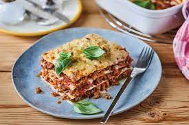

Lasagna

Classical Lasagna
Lasagna is a type of pasta, possibly one of the oldest types, made of very wide, flat sheets. Either term can also refer to
an Italian dish made of stacked layers of lasagna alternating with fillings such as ragù (ground meats and tomato sauce),
béchamel sauce, vegetables, cheeses (which may include ricotta, mozzarella, and parmesan), and seasonings and spices.
The dish may be topped with grated cheese, which becomes melted during baking. Typically cooked pasta is assembled with
the other ingredients and then baked in an oven. The resulting baked pasta is cut into single-serving square or rectangular portions.
Ingredients
- 500g Minced beef
- 400g Soup vegetables
- 1 Onion, yellow
- 2 pcs. Garlic cloves
- 2 tbsp. Oil
- 1 tbsp. Tomato paste
- Prize salt
- Prize Pepper, black
- Prize Sugar
- 1/2 tsp. Oregano, dried
- 75 ml White Wine, dry
- 850 g Tomatoes, chopped
- 30 g Butter
- 30 g Wheat flour, Type 405
- 400 ml Milk
100 ml Vegetable broth
Prize Nutmeg, ground
20 g Basil, fresh
- 50 g Parmesan
- 12 pcs. LAsagna sheets
- 100 g Gouda, grated
Steps
- Remove minced meat from refrigerator to temper. Wash soup vegetables, remove ends if necessary, peel and finely dice.
Halve, peel and dice onion and garlic. In a saucepan, heat 1 tablespoon of oil on high and brown ground meat in
it for about 3 minutes until hot and crumbly. Then set aside on a plate.
- Add 1 tablespoon of oil to the drippings in the pot and sauté onion, garlic and soup vegetables for approx. 2-3 min.
Add meat again, as well as tomato paste and fry for approx. 1 min. Season with salt, pepper, sugar and oregano, deglaze
with wine, add tomatoes and bring to the boli. Simmer Bolognese sauce for approx. 25 min. Stir occasionally.
- Meanwhile, for the béchamel sauce, melt butter in a saucepan. Add flour and sweat in it. Deglaze with milk and broth and
simmer for about 15 minutes, stirring regularly. Season with salt, pepper and nutmeg. Preheat oven to 180 °C (top/bottom heat).
Wash basil, shake dry, pluck off leaves and roughly pluck or chop. Finely grate Parmesan cheese.
- Spread a thin layer of béchamel sauce in a baking dish, place 2-3 lasagna sheets on top and spread a few tablespoons of Bolognese on top.
Do the same with the remaining ingredients, ending with mince sauce. Sprinkle with Gouda and finally Parmesan and bake lasagne in preheated
oven at 180 °C for approx. 30 min. until golden brown.
- Remove finished lasagna from oven, let cool slightly before serving and sprinkle with basil.